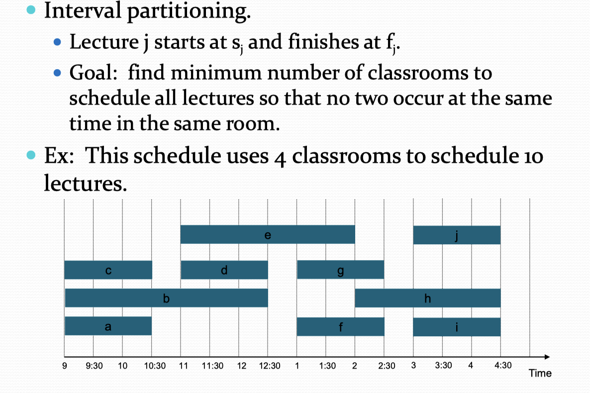
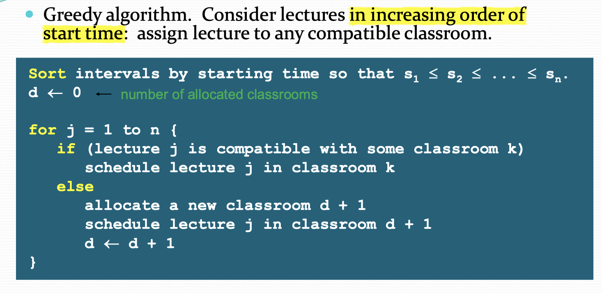

An algorithm is greedy if it builds up a solution in small steps, choosing a decision at each step myopically and builds up a solution in small steps.
Interval Scheduling
问题叙述和之前动态规划里面的类似
goal: accept as large a set of non-overlapping intervals as possible.
basic ideal:
- use a simple rule to select a first request $i_{1}$, and reject all requests that not compatible with $i_{1}$
- select next request $i_{2}$ and repeat the last process
- continue until run out all the requests
这里的选择方法是：
- choose a request that has the smallest finishing time
proof: 因为题目的要求是取得最大的数量，因此用反证法证明：
assumption: optimal set O 有更多的 requests。
因为根据贪婪算法，我们的选择方式是 使每个request 的结束时间最短，所以在取k 个任务时，一定有 A 比 O 结束的早。因此要有更多的数量， 那么O 里面一定有 k+1 个任务是可选的。 但是贪婪算法为啥不用这个呢，不合理，，，所以假设错误。Schedule Minimize lateness
suppose that we need to satisfy some requests, but some can be delayed for some time,,,
the request i has the deadline $d_{i}$ and it requires a contiguous time interval of length $t_{i}$.
the lateness is $f(i) - d_{i}$ if the finish time is later than deadline. or it should be 0;
一言以蔽之，实际上这个题目就是，对于每个任务，他有开始时间和结束时间，此外还有一个 deadline, 在这个ddl结束前完成的话，lateness 就是0. 在ddl 结束后完成的，lateness 就是超出的时间。
算法也很简单，对所有的任务按照 deadline 的时间重新排序，然后按照这个顺序来进行选择。
Interval Partitioning
简单来说就是，有多个任务需要完成，但是每个队列在同一时间只能完成一个，因此求最小的队列数。
贪婪算法在本题中的应用是：

Shortest path problem
这又是一个图论问题！
这个问题的本质还是寻找从 u 点出发到其他任意一个点的最短距离。
Minimum spinning tree
成树是将原图的全部顶点以最少的边连通的子图，对于有n个顶点的连通图，生成树有n-1条边，若边数小于此数就不可能将各顶点连通，如果边的数量多于n-1条边，必定会产生回路。
对于一个带权连通图，生成树不同，树中各边上权值总和也不同，权值总和最小的生成树则称为图的最小生成树。